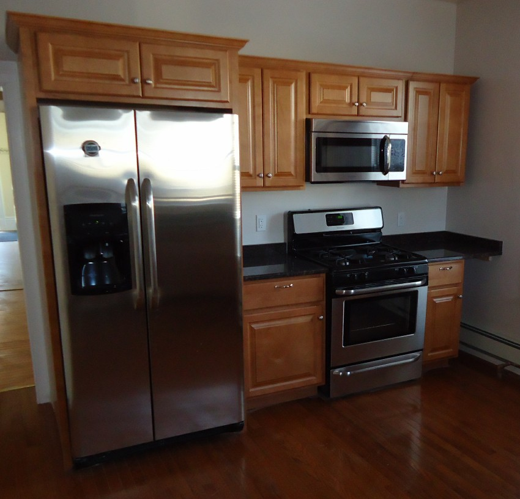

Refrigeration 90-Day WarrantyRefrigerator & Freezer Repair
Major CoolingPrecision cooling diagnostics, digital inverter start relays, defrost heater cycle restoration, evaporator fan motor replacements, and ice maker water line leak repair.
Common Failure Modes Diagnosed:
- Fresh food temperature rising above safe 40°F
- Evaporator coil frost freeze-up blocking airflow
- Clicking inverter compressor start relay or fan rattle